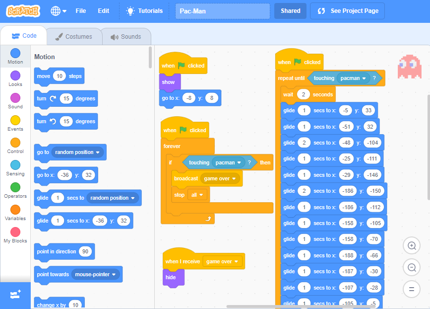
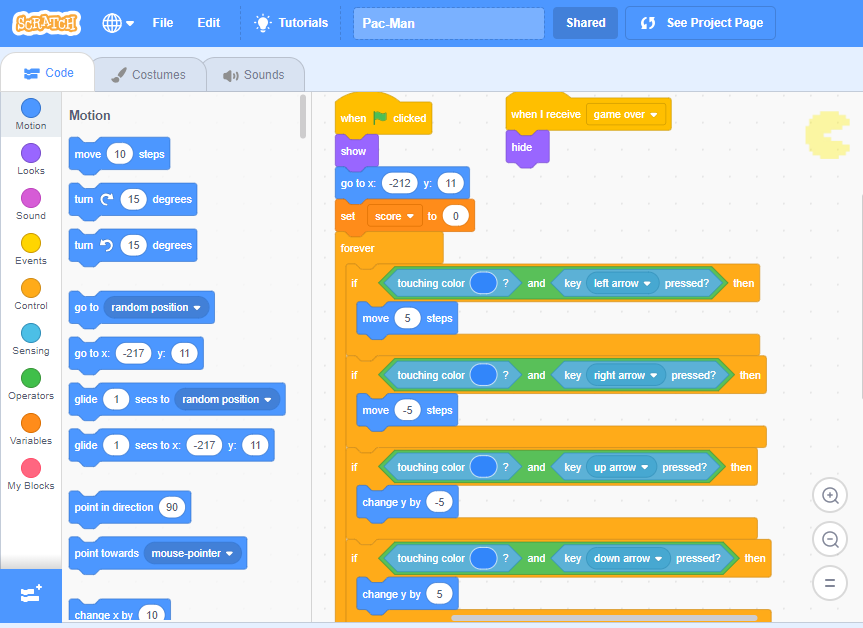
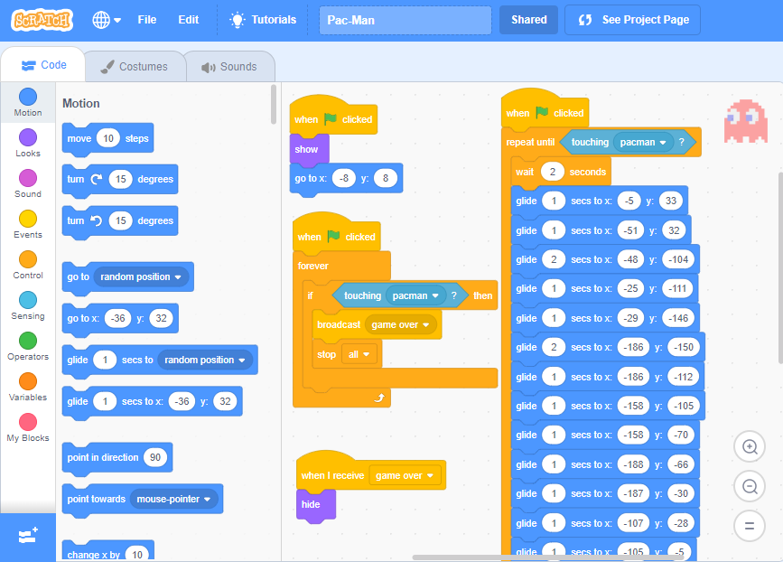
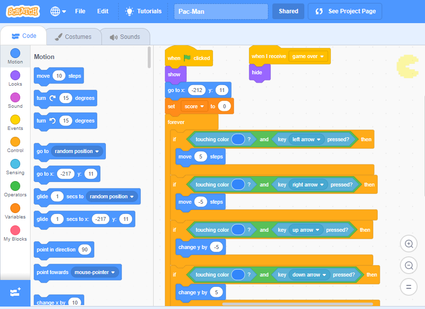

PAC-MAN
HOME
MR. CALCULATOR
WHAT-A-COLOUR!
PAC-MAN
 



Everyone has played the original PacMan. I really like this game so
I decided to actually try writing the code for the same. I just
wanted to see for myself how difficult writing this code would be
but honestly it was pretty easy. This game is basically just PacMan
except that you don't have that potion to drink so that you get
to chase the ghosts. Also, you only have one life! To play this
game, kindly checkout this link right here.